No capítulo 4 vimos o evento de click onClick, que geralmente é usado em um botão. Quando o botão for clicado um método será executado. Mas temos diversos outros eventos. Neste capítulo veremos os eventos onSubmit e o onChange.
O onSubmit é o evento para quando temos formulários:
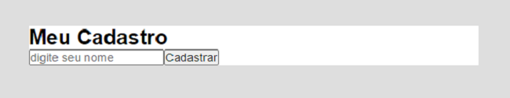
Neste exemplo o arquivo App.jsx se encontra da seguinte forma:
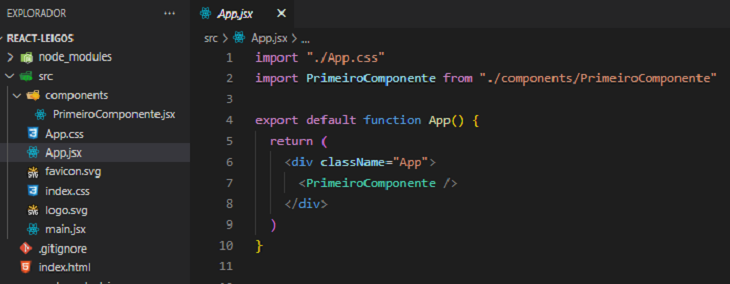
O nosso formulário se encontra dentro da tag form com dois input's, um input text que irá receber uma string e um input submit que se assemelha a um botão.
Quando estamos usando a tag form, o evento onSubmit é colocado dentro da tag juntamente com o método a ser executado. No exemplo abaixo o método/função irá disparar um alert.
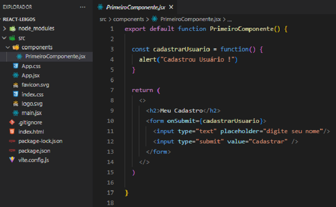
No navegador teremos:
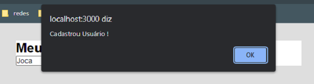
IMPORTANTE: Formulários (form) enviam dados para o backend (servidor), enviam os dados que estão dentro da tag form para algum lugar, no nosso exemplo acima ele está enviando apenas o nome digitado dentro do input text.
Veremos uma característica importante do onSubmit. Para isso mudaremos a função cadastrarUsuario.
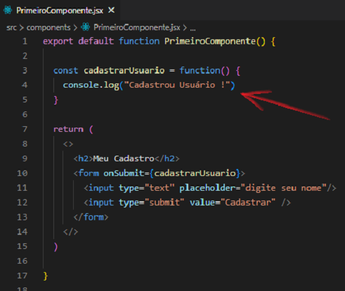
No navegador, ao digitar um nome e clicar em Cadastrar, acontece o reload da página, ou seja, a página é atualizada e o console.log não permanece no Console do navegador. Essa é uma característica do evento onSubmit. Para interromper esse reload da página usaremos os seguintes comandos:
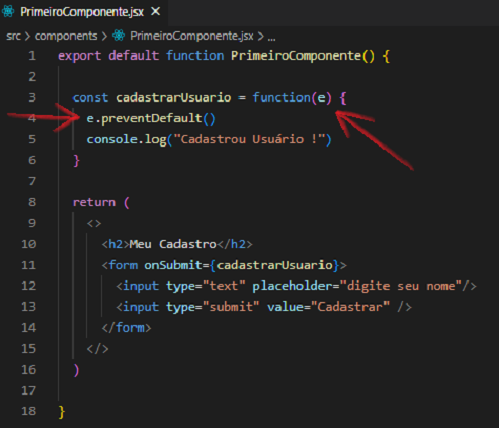
Quando colocamos o e (também pode ser a palavra event) dentro dos parênteses de function, podemos usar o método preventDefault, que interrompe esse reload do evento onSubmit.
Agora o console.log permanece no Console do navegador e a página não é atualizada:
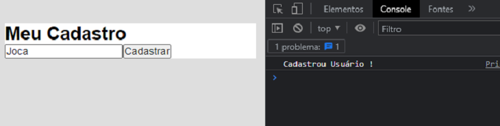
O arquivo App.jsx se encontra dessa maneira:
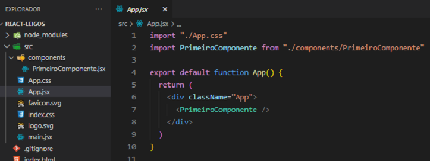
O evento onChange() é um evento de mudança, no nosso exemplo assim que houver uma mudança na tag em que o onChange() estiver a função será executada.
Essa função teclado recebe um parâmetro (geralmente e ou event). A partir desse parâmetro podemos usar o comando e.target.value, que significa que iremos pegar cada valor digitado na tag input.
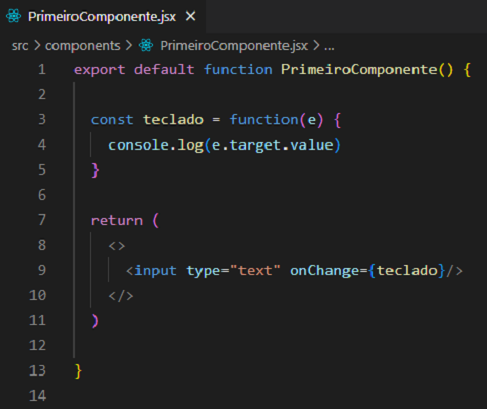
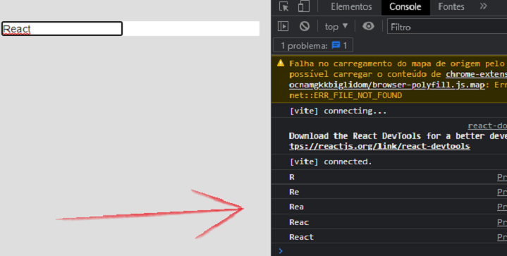
Outro exemplo:
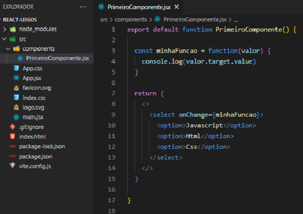
No exemplo acima fizemos um select com algumas opções dentro. Perceba que o evento é passado dentro da tag select e a cada mudança a função minhaFuncao é executada. A função leva um parâmetro com o nome de valor. O comando valor.target.value significa que o valor de cada mudança ocorrida será mostrado no console.log.
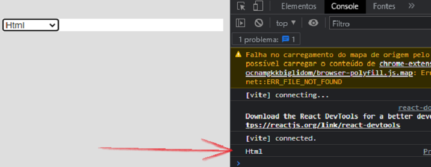
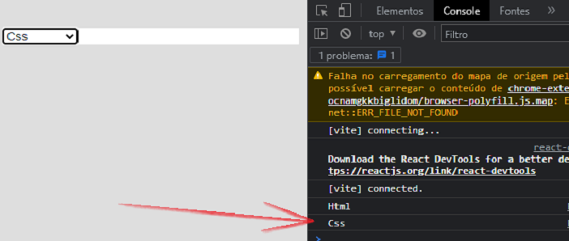
Perceba que a cada mudança que fazemos no select, o seu valor é mostrado no console.log.